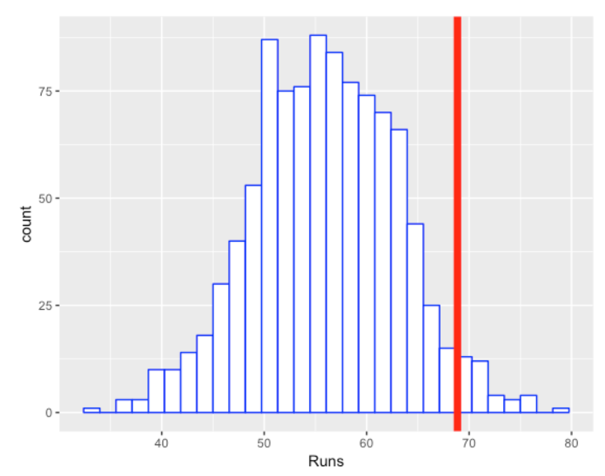
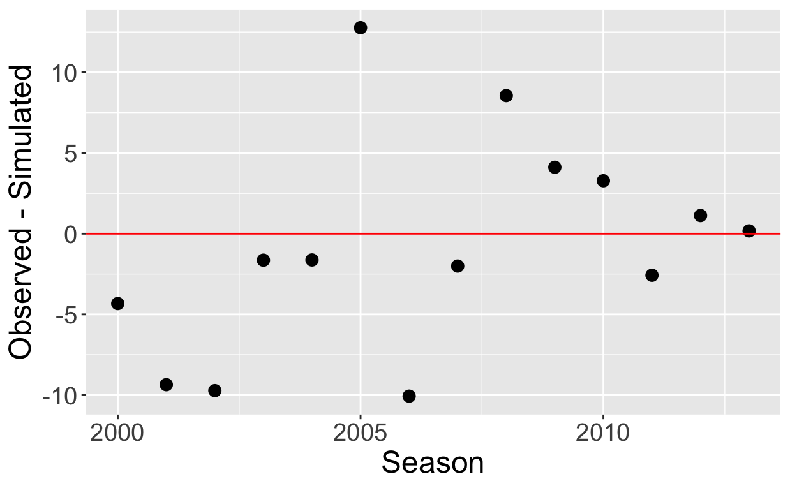
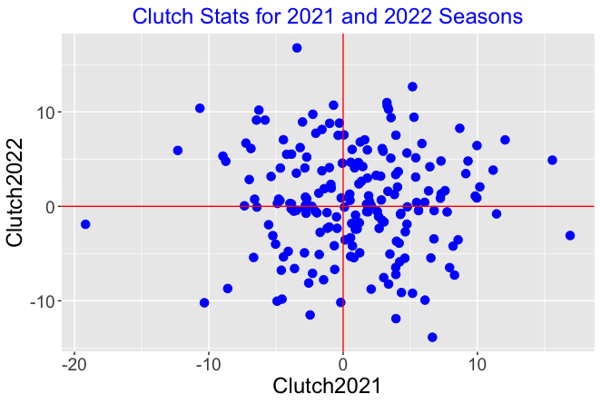
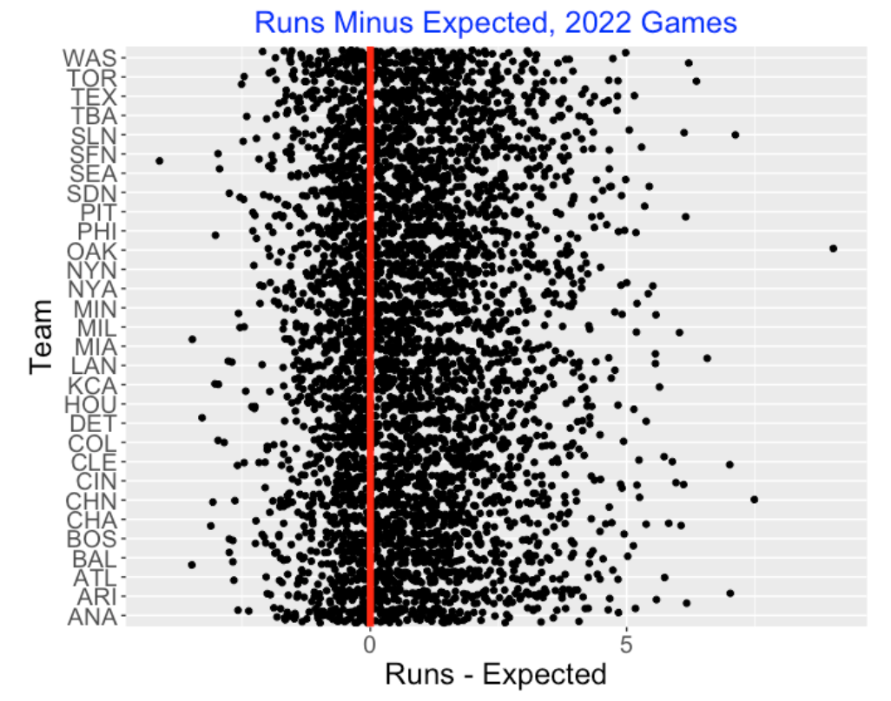
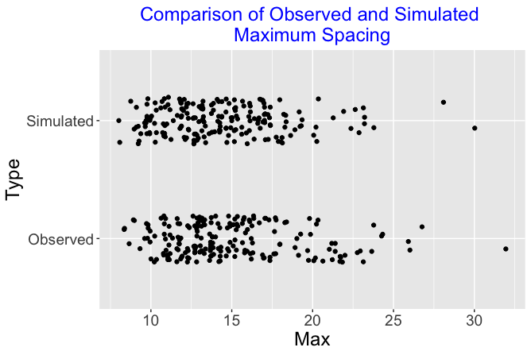

Predictive Simulation Checking: Looking for Situational Ability
1 Introduction
When one explores the batting statistics for a particular hitter, they can be divided into two categories:
Situational measures are measures based on the particular game situation. For example, runs batted in (RBI) describes the number of runs the batter advanced to home. Players with high RBI totals are typically those in the middle of the lineup who have many opportunities to bat with runners on base.
Non-Situational measures, in contrast, are measures that are independent of the particular game situation. A batting average or a weighted on-base percentage (wOBA) measure is a non-situational measures since either measure has nothing to do with the number of runners on base and outs in the inning.
This raises the question – should one be interested in situational measures for a hitter? Fans are fascinated about the performance of players in clutch situations, particular those situations towards the end of the game when the game is close and there are runners on base. In fact, players such as David Ortiz and Reggie Jackson are famous for their batting performances in these important situations during playoff games.
Generally one needs to make a distinction between a player’s ability which is unknown and the player’s performance which one observes over the seasons of the player’s career. Certainly players like David Ortiz have displayed remarkable clutch performances during their careers. But the interesting question is whether these players, or any players in baseball history have clutch ability.
2 General Predictive Simulation Approach
Here is a general statistical approach for exploring clutch performances that is helpful for determining if particular players possess clutch ability.
(Data) We start with the data – suppose for each plate appearance (PA) of a particular batter during a particular season we collect the game situation (runners on base and number of outs) and the outcome of the PA.
(A Model) Consider a model where the batter has no clutch ability which implies that the PA outcomes are independent of the game situation. If we arrange the PA outcomes as one long sequence, this assumption implies that all permutations of these PA outcomes are equally likely to occur.
(Simulate) We simulate one occurrence of data assuming the model. Here since the model says the all arrangements of PA outcomes are equally likely, we simulate one permutation of the PA outcomes.
(Compute a Measure) From this simulated data, we compute a relevant measure. Here one appropriate measure would be the total runs value of the PA outcomes. We don’t know the exact runner advancement – for example, we don’t know the exact new bases situation when a single is hit with a runner on 1st base. But we can make reasonable assumptions about the new runners on base/bases situation from historical data and from this we compute a runs value.
(Repeat). We repeat the simulate and compute a measure steps of this process and collect the total runs values for these simulations. This collection of runs values represents what one would predict for total runs value if there was no relationship between the situation and the PA outcome.
(Compare with Observed). Last we compute this predictive distribution with the actual observed runs value for that player in the season. We compute a clutch measure – how likely the observed runs value exceeds the expected runs value from our model.
\[ CLUTCH = RUNS_{observed} - E(RUNS) \]
3 Computation of Clutch Measures
3.1 The 2005 David Ortiz
We collect the outcomes and the associated situations (runners on base and number of outs) for David Ortiz during the 2005 season. There are six possible outcomes – single, double, triple, home run, walk, and out and 24 possible bases/outs situations. For each of the 6 \(\times\) 24 = 144 outcome/situations, we predict the new bases/outs situation and the number of runs scored.
For each of Ortiz’s plate appearance, we use the runner advancement assumptions to compute the runs value of the outcome of the plate appearance. By totaling these runs values over all PAs, we obtain that Ortiz’s runs value for the 2005 season was 68.86.
What would Ortiz produce if the PA outcomes were independent of the situation? To answer this question, we perform the simulation experiment.
- Randomly mix up the sequence of 708 PA outcomes.
- Using our runner advancement assumptions, compute the total runs values of these outcomes.
- Repeat this mix-up process 1000 times, collecting the simulated total runs values.
The following figures shows a histogram of the runs value across the 1000 simulations. We see on the average, if the PA outcomes are independent of the game situation, Ortiz would average 55 runs. The observed runs value, displayed by the red vertical line, is 68.86. So the clutch statistic for the 2005 David Ortiz is \[ CLUTCH = 68.86 - 65 = 13.86. \]

So Ortiz was clutch in the sense that he produced more runs than one would expect if the situations were independent of the outcomes. The right-tail probability here is about 0.04 which indicates that he was “significantly” clutch for the 2005 season.
3.2 Was David Ortiz Consistently Clutch?
The obvious follow-up question is “Was David Ortiz consistently clutch in his career?” I went ahead and repeated this work for each of Ortiz’s seasons 2000 through 2016. For each season, I computed two numbers:
- the actual number of runs Ortiz produced, and
- the mean number of runs based on the simulation assuming the “situation is independent of outcome” model.
In the below figure I plot the value of the clutch statistic across all of Ortiz’s seasons.

We see that Ortiz was most clutch in 2005, producing approximately 14 additional runs, but this was unusual in his career. Note that the clutch values fluctuate around zero indicating that there is little evidence that Ortiz was consistently clutch through his career.
3.3 Situational Measures for Two Consecutive Seasons
Generally one way of assessing if a particular baseball measure of performance is ability-driven is to collect the measure for two consecutive seasons. If the scatterplot of the two measures displays some positive association, this indicates that the measure has an ability component. The measure for one season is somewhat predictive of the measure for the following season.
We implemented this method for our situational hitting measure. Here’s an outline of what I did.
I collected the hitters who had at least 300 plate appearances in the 2021 and 2022 seasons.
For each player in each season, I computed \(R\), the number of runs producted and \(M\), the mean number of runs produced assuming the “situation is independent of the PA” model. So for each player we have two clutch measures:
\[ Clutch_{2021} = R_{2021} - M_{2021} \]
and
\[ Clutch_{2022} = R_{2022} - M_{2022} \]
Each clutch statistic measures the additional runs produced by the hitter above what would be predicted from the random model.
The following figure displays a scatterplot of the clutch statistics for the 2021 and 2022 seasons.

We see several things:
Each clutch measure seems to be symmetric about 0. For each season, you will find players who produce 10 more runs than expected and you’ll also find players who produce 10 fewer runs than expected. There is a wide spread of clutch values for the players for a particular season.
There is little association in the graph. This indicates that the clutch measure is not predictive. Knowing the clutch measure for a particular player in the 2021 season doesn’t help you to predict the clutch measure for the following season.
4 Clutch-Luck Scoring
4.1 The Method
Suppose a team scores 10 runs in a game. I would like to measure the so called “cluster luck” of this run scoring. That is, how many of these 10 runs are attributed to the fact that the team was able to cluster their on-base events? As an example, look at the June 12, 2015 game between the Red Sox and the Blue Jays where the Red Sox scored 10 runs. Using Retrosheet play-by-play data, it was straightforward to extract all of the outcomes (in sequence) of the PA’s during this game.
[1] "OUT" "BB" "2B" "1B" "OUT" "HR" "HR" "1B" "1B" "BB" "OUT"
[12] "OUT" "1B" "OUT" "OUT" "OUT" "1B" "BB" "HR" "OUT" "OUT" "OUT"
[23] "OUT" "OUT" "OUT" "OUT" "1B" "OUT" "OUT" "OUT" "OUT" "OUT" "OUT"
[34] "OUT" "BB" "OUT" "OUT" "BB" "1B" "BB" "OUT" "OUT" "BB" "OUT"
[45] "2B" "OUT"In this game, the Red Sox had 12 hits (7 singles, two doubles, and 3 home runs), 7 walks, and 27 outs for the nine-innings they batted in this game.
Suppose there is really no true clustering in the arrangement of the 46 PA outcomes above. That would suggest that all possible arrangements of these symbols is equally likely.
Here is how we apply predictive simulation in this setting.
I randomly mix up these 46 symbols. Based on the outs, I can partition the mixed-up PA’s into nine innings.
Using a relatively simple run-scoring algorithm for each inning, I simulate the runs scored for this mixed-up game given this random arrangement of symbols.
I repeat the last step a large number of times, obtaining a simulated distribution of runs scored in the game if there is no true clustering. This represents the game run scoring that one would predict if these 7 singles, 2 doubles, 7 walks, 3 home runs, and 27 outs just occurred in some random fashion during the game.
I compare the actual run scoring with this simulated distribution – if the actual runs scored is “large” relative to the simulated distribution, then that would indicate some “cluster luck”.
4.2 Cluster Luck Scoring in 2022 Season
I applied this method across all teams and games in the 2022 season. For each game, I collected the sequence of plate appearance outcomes (1B, 2B, 3B, HR, BB or HBP, OUT) and used my run scoring model to simulate the run scored assuming no real clustering of events. For each team, I compute the runs scored minus the expected runs scored from the simulations using my model.
Below I display a graph of the residuals (Runs Minus Expected Runs) for all games plotted against the batting team. I overlay a vertical line at zero.

It is clear that my run scoring model underestimates the actual number of runs scored in these games. One can compute the the mean residual is 0.82 which means that there are, on average, 0.82 more runs scored than predicted from the model. My model is just based on the hit and walk/hbp events, ignoring runner advancements due to errors, wild pitches and sacrifices, so it is not surprising that the model would underestimate the observed runs. Also I would suspect some natural clustering of the on-base outcomes since one may be facing an unusually weak pitcher or strong pitcher in particular innings.
This method is helpful in measuring the cluster-luck component of scoring runs. But this exploration doesn’t find any team effect. That is, I don’t see teams that are especially good or especially weak in clustering runs.
5 Measuring Streakiness
5.1 Introduction
The predictive simulation approach is also helpful in understanding streaky hitting patterns of players. For the purposes of illustration, we define a success in a plate appearance as getting on base. Certainly, hitters have different abilities to get on base reflected in the distribution of on-base percentages. But players also display streaky on-base patterns where they have long sequences of consecutive on-base outcomes or long sequences of “not on-base” (so-called “ofer” patterns). Are these streaky patterns of hitting performance meaningful? We use a predictive simulation to address this question. Observed streakiness for players can be compared with patterns of streakiness simulated from predictive distributions from a consistent hitting model.
5.2 The Method
Here is a general outline of the approach.
(Define streakiness). For the plate appearances for a given player during a season, we have a sequence of 0-1 outcomes, where 1 corresponds to a on-base event. To measure the observed clumpiness or streakiness pattern in the sequence, look at the spacings between the successive on-base events. One streaky measure would be the sum of squared spacings. Another measure would be the maximum spacing length.
(Define a consistent model). One defines a model that describes a truly consistent hitter. The outcomes of this hitter are independent where the chance of getting on-base on a particular PA is \(p\). This assumes that the chance that a player gets on base is a constant value throughout the season.
(Estimating the on-base abilities). If we have \(N\) players with on-base probabilities \(p_1, ..., p_N\), we estimate these probabilities using a multilevel model. One finds that a good estimate at the on-base probability for player \(j\) has the form \[ \hat p_j = \frac{y_j + a}{n_j + a + b} \] where \(y_j\) is the number of on-base events in \(n_j\) plate appearances and \(a, b\) are estimated constants. The ability estimates shrink the observed on-base percentages \(\{y_j / n_j\}\) towards a common value.
(The Predictive Simulation). We simulate PA outcomes from the \(N\) players from a predictive distribution. We do this in two steps – we first simulate a set of on-base probabilities and then simulate the on-base outcomes using the simulated probabilities.
We simulate on-base probabilities \(p_1, ..., p_N\) from independent beta distributions where \(p_j \sim beta(y_j + a, n_j + b)\). (Recall \(a\) and \(b\) are the estimated shape parameters of the beta curve found by fitting the multilevel model.)
We simulate replicated outcomes for the \(N\) players using independent Bernoulli distributions. For the \(j\)th player who has \(N_j\) plate appearances, we simulate \(y_{j1}, ..., y_{jN_j}\) from a Bernoulli(\(p_j\)). We call these replicated outcomes, since the \(j\)th player in the simulation is getting the same number of PA as he did in the season.
For each player, we compute a streaky measure \(S_{sim}\) from the simulated outcomes.
(Repeat the Simulation). We repeat this process (simulate on-base abilities and PA outcomes) for all players a large number of iterations. For a given player, we have a distribution of streaky measures \(S_{sim}\) from the multiple simulations that we call the simulation distribution.
(Compare with Observed Streakiness). To detect unusual streakiness for a given player, we compare the simulation distribution of the streaky measure with the observed streaky measure \(S_{obs}\). In this comparison, we compute the tail probability \[ Tail \, \ probability = Prob(S_{sim} \ge S_{obs}). \] If the tail probability is small, say under 10%, then this observed streakiness for this player is unusual given the consistent hitting model.
5.3 Streakiness in the 2022 Season
We illustrate this approach using the on-base outcomes for all players with at least 400 PA for the 2022 season. We implement this method for one iteration – we simulate the players’ on-base percentages from the independent beta distributions, and then simulate PA outcomes from the Bernoulli distributions. From the simulated outcomes for each player, we find the maximum spacing (longest number of PA without an on-base event).
The following figure displays jitted dotplots of the maximum spacings for the observed and simulated data for the 204 players. We notice that four players had maximum observed spacings longer than 25 during the 2022 season. But we also see several long spacings from the simulated data.

Certainly this model is a bit simplistic. It is unrealistic to assume that a player’s on-base probability is a constant value throughout an entire season. But based on this brief exploration this consistent hitting model appears to predict streaky outcomes similar to what we observe during this season. At the very least, it would take a more extensive exploration to detect differences between the simulated and observed spacings between on-base events.
6 Closing Remarks
Currently a plethora amount of measures of hitting and pitching performance of players and teams are available on sites such as FanGraphs and Baseball Savant. But there is a potential that these measures are noisy in the sense that differences between players, say, are reflective of random or luck variation instead of reflecting differences in player ability. Example of noisy data are performance measures after a small number of games in a season or the performances of players in different situations (home/away, against different pitch types, etc).
The predictive simulation checking approach is helpful in determining the abilty component of different measures of performance. In the examples presented here, one first proposes a model that says “no effect” such as no clutch ability or cluster ability in team scoring, and then one simulates data (predictions) based on the model. If the observed effect is consistent with the simulated data, then that indicates that the proposed model is reasonable.
There are many illustrations of this predictive approach for model checking in baseball. Here we presented examples of clutch hitting and streaky patterns in hitting among players. The same approach is helpful for exploring situational effects of players. For example, although players differ on how they perform in home and away games, a reasonable model for these data is that the home advantage is the same for all players (a so-called bias effect). A predictive simulation can demonstrate that the observed situational data is consistent with simulations from this bias effect model.
7 Further Reading
The following articles from the Exploring Baseball with R blog describe the use of predictive simulation to detect real effects in situational and streaky scenarios. The articles include references to R code to implement these simulations.
“Cluster Luck Scoring in the 2022 Season”, Exploring Baseball with R blog, https://baseballwithr.wordpress.com/2023/04/24/cluster-luck-scoring-in-2022-season/#:~:text=We%20can%20then%20compare%20the,base%20events%20to%20score%20runs.
“Streaky Mike Trout”, Exploring Baseball with R blog, https://baseballwithr.wordpress.com/2016/11/21/streaky-mike-trout/
“Measuring Situational Hitting”, Exploring Baseball with R blog, https://baseballwithr.wordpress.com/2017/02/13/measuring-situational-hitting/
“Extreme Ofers? Predictive Checking of a Coin Flipping Model”, Exploring Baseball with R blog, https://baseballwithr.wordpress.com/2021/07/19/extreme-ofers-predictive-checking-of-a-coin-flipping-model/
“Predictive Checking of a Streaky Model”, Exploring Baseball with R blog, https://baseballwithr.wordpress.com/2021/07/26/predictive-checking-of-a-streaky-model/